İtaliya Tarixi
Qədim İtaliyaEtrusklar və Yunanlar (e.ə. VIII-III əsrlər)Etrusklar mərkəzi İtaliyada yaşamış qədim bir xalqdır. Onların mədəniyyəti və dili Romaya böyük təsir göstərmişdir. Cənub İtaliyada və Siciliyada yunan koloniyaları qurulmuş və bu bölgələr Hellenistik mədəniyyətin təsiri altında olmuşdur. |
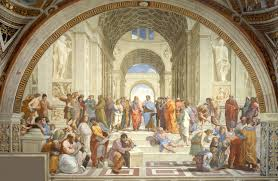 | |||
| 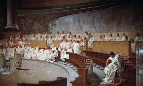 |
Roma Respublikası (e.ə. 509-27)Roma Respublikası dövründə Roma şəhəri tədricən İtaliya yarımadasının və daha sonra Aralıq dənizi hövzəsinin əksər hissəsini fəth etmişdir. Bu dövrdə Roma hüququ, siyasi və hərbi strukturları formalaşmışdır. Pun müharibələri (e.ə. 264-146) Romaya Qərbi Aralıq dənizi bölgəsində üstünlük qazandırdı. |
|||
Roma İmperiyası (e.ə. 27 - e. 476)Augustus tərəfindən qurulan Roma İmperiyası Qərbi Avropa, Şimali Afrika və Yaxın Şərqə qədər genişlənmişdir. İmperiya mərkəzləşmiş idarəetmə və nəhəng yol şəbəkəsi ilə tanınırdı. Roma mədəniyyəti, hüququ və mühəndisliyi bu dövrdə zirvəyə çatdı. Lakin 476-cı ildə Qərbi Roma İmperiyası barbar hücumları nəticəsində süqut etdi. |
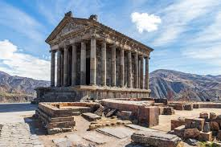
Garni məbədi |
|||
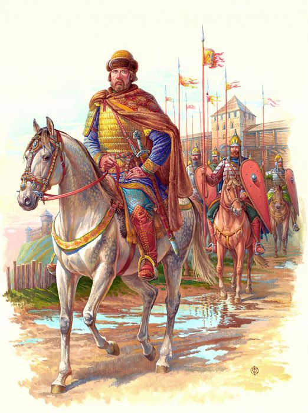
Bizans İmperiyası: Palaiologos sülaləsi |
Orta ƏsrlərBizans və Lombard Hakimiyyəti (VI-VIII əsrlər)Qərbi Roma İmperiyasının süqutundan sonra, İtaliya müxtəlif Bizans və Lombard dövlətləri tərəfindən idarə olunmağa başladı. Bizans İtaliyanın cənub hissəsini və Ravenna şəhərini idarə edirdi, Lombardlar isə mərkəzi və şimal İtaliyada hakimiyyətə malik idi. |
|||
Karolinq İmperiyası və Müqəddəs Roma İmperiyası (IX-XII əsrlər)800-cü ildə Böyük Karl (Karolinq) Roma Papası tərəfindən imperator elan edildi və bu, Karolinq İmperiyasının yaranmasına səbəb oldu. Daha sonra Müqəddəs Roma İmperiyası dövründə İtaliya Alman imperatorları tərəfindən idarə olunurdu. |
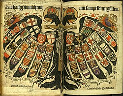
Müqəddəs Roma imperiyası |
|||
| 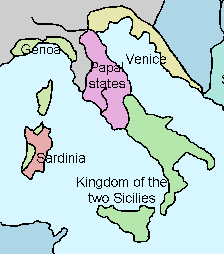 |
Şəhər-Dövlətlər (XII-XV əsrlər)Bu dövrdə İtaliyada şəhər-dövlətlər yüksəldi. Venesiya, Florensiya, Milan, Genuya kimi şəhərlər iqtisadi və mədəni mərkəzlər oldu. Bu şəhərlər ticarət və bankçılıq sahəsində böyük uğurlar qazandı və zənginləşdi. |
|||
Rönesans Dövrü (XIV-XVII əsrlər)İtaliya Rönesansı dövründə sənət, elm və mədəniyyət sahəsində böyük irəliləyişlər əldə edildi. Leonardo da Vinçi, Mikelancelo, Raffael və Dante Alighieri kimi görkəmli şəxslər bu dövrdə fəaliyyət göstərdilər. Florensiya, Roma və Venesiya Rönesansın əsas mərkəzləri idi. |
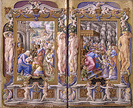
İntibah dövrü |
|||
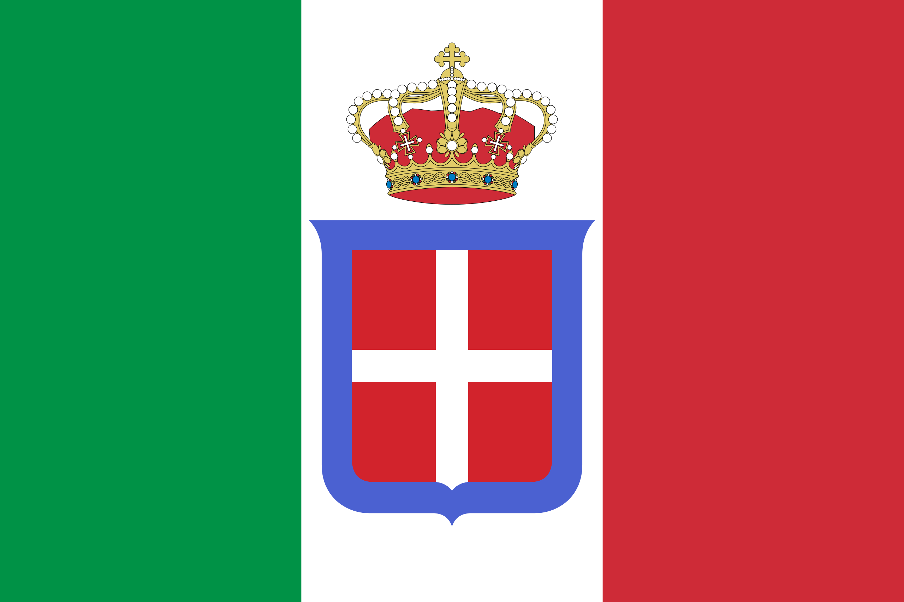
İtaliya Bayrağı (1861-1946) |
Müasir Dövrİtaliya Krallığı (1861-1946)İtaliya birləşməsi (Risorgimento) nəticəsində 1861-ci ildə İtaliya Krallığı quruldu. Bu dövrdə İtaliya Avropa siyasətində və müharibələrində aktiv iştirak etdi. İtaliya Birinci Dünya Müharibəsindən qalib çıxdı, lakin İkinci Dünya Müharibəsindən sonra məğlub oldu və böyük zərərlərə məruz qaldı. |
|||
İtaliya Respublikası (1946-indiki dövr)İkinci Dünya Müharibəsindən sonra, 1946-cı ildə keçirilən referendumda monarxiya ləğv edildi və İtaliya respublika oldu. İtaliya sürətli iqtisadi inkişaf dövrü yaşadı və Avropa İttifaqı və NATO kimi beynəlxalq təşkilatların qurucu üzvü oldu. Bu gün İtaliya dünya siyasətində və iqtisadiyyatında mühüm rol oynayır. |
 |
Roma imperator sülalərinin zaman xətti
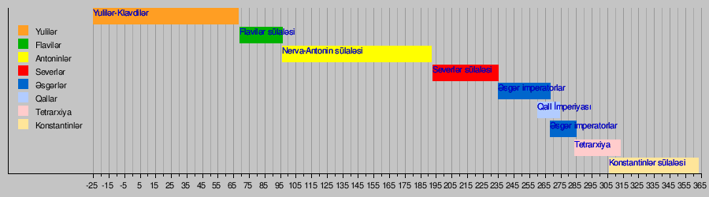Bizans imperator sülalələrinin zaman xətti
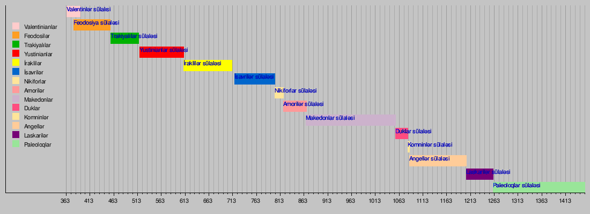İtaliyanın tarixi haqqında ümumi məlumatlar
İtaliyanın adət-ənənələri
| 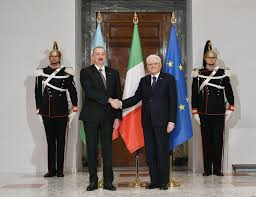 |
Qonaqpərvərlikİtalyanlar qonaqpərvərlikləri ilə tanınırlar. Evə qonaq çağırıldıqda, qonaqlara xüsusi diqqət və qayğı göstərilir. Qonaqlara qarşı səmimi və isti münasibət göstərmək İtalyan mədəniyyətinin vacib bir hissəsidir. |
||
Yemək Adətləriİtalyanlar yemək vaxtına böyük əhəmiyyət verirlər. Yemək adətən ailə ilə birlikdə yeyilir və uzun müddət davam edir. Yemək zamanı müxtəlif yeməklər, xüsusilə pasta, pizza, risotto və antipasti təqdim olunur. İtalyanlar üçün şərab da yemək zamanı vacib bir elementdir. |
 |
||
| 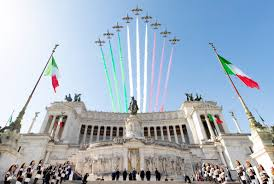 |
Bayramlar və Festivalar |
||
|
|
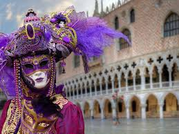 | ||
| 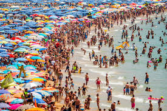 |
|
||
Geyim və Modaİtalyanlar moda və geyimə böyük əhəmiyyət verirlər. Milan dünyanın moda paytaxtlarından biri sayılır. İtalyanlar üçün təmiz və şık geyinmək vacibdir və onlar adətən dəbli və zərif geyimləri seçirlər. |
|||
DinKatoliklik İtaliyada ən geniş yayılmış dindir və İtaliya mədəniyyətinə dərin təsir göstərir. Bir çox bayram və mərasimlər Katolik kilsəsi ilə əlaqədardır. Məsələn, Pasxa və Milad bayramları xüsusi təntənə ilə qeyd edilir. |
|||
Ədəbi Və Bədii İrsİtalyanlar öz zəngin ədəbi və bədii irsləri ilə fəxr edirlər. Dante Alighieri, Leonardo da Vinci, Michelangelo və bir çox digər məşhur şəxsiyyətlər İtaliyanın mədəni irsinin ayrılmaz hissəsidir. Muzeylər və incəsənət qalereyaları İtaliyanın hər yerində tapıla bilər. |
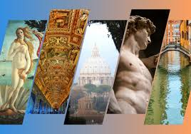 | ||
Əyləncə və İdmanİtalyanlar futbolu çox sevirlər və bu idman növü İtaliyada ən populyar idman növüdür. İtalyan futbol klubları, xüsusilə də Juventus, Milan və Inter dünya miqyasında məşhurdur. Bundan əlavə, İtaliyada opera və teatr tamaşaları da geniş yayılmışdır. |